Learning platform
MockQuestions
Your shortcut to success in interviews
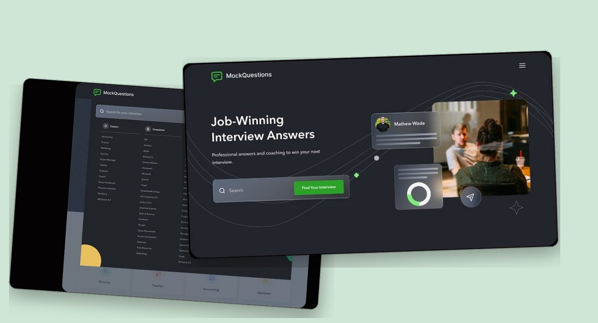
Overview
This project is a web and mobile based platform designed to help job seekers prepare for job interviews. Users can search for career positions by industry, filter by company, and access a list of interview questions categorized by role type or profession. The system also provides sample answers and guidance from experts to help users improve their chances of success in the job selection process.
Problem
- Candidates struggle to find interview questions relevant to the positions they are applying for.
- Information about the interview process at various companies is scattered and unstructured
- Candidates lack confidence because they don't know how to answer questions correctly.
Solution
- Provides a database of interview questions based on specific professions and roles.
- Offers a career search feature with company filters for more specific results.
- Displays professional sample answers and tips from HR experts to help users respond accurately.
My role
As a UX/Ul Designer on this project, I was responsible for designing the user flow based on two main scenarios: career search and interview question list exploration.
I designed an intuitive, responsive, and user friendly interface, ensuring an optimal user experience across various devices. Throughout the process, I created wireframes, high fidelity mockups, and interactive prototypes in Figma to illustrate efficient search flows and information access.
Additionally, I organized the information structure systematically to make it easy for users to navigate features such as company filters and professional categories. I applied principles of visual hierarchy and usability to help users stay focused on their primary goals: finding the right position and preparing well for job interviews.
Process
The design process for this project was divided into four key phases to ensure a user centered and results experience: 1. Discovery At this step, I analyzed competitors to understand existing approaches in the market. In addition, I identified pain points that users often experience in the job search and interview preparation process. A deep understanding of user needs and target audiences is an important foundation before entering the design phase. 2. Ideation In this step, I began to develop user flows and user journeys to illustrate how users would interact with the product as a whole. The goal was to ensure that each step felt logical, efficient, and aligned with users' needs in achieving their objectives. 3. Design Process This stage includes developing a design system to maintain visual and functional consistency across all interface elements. Based on the defined structure and flow, I designed a responsive and user friendly final design, focusing on ease of navigation and information readability. 4. Usability Testing Once the final design is complete, I create scenarios and tasks to test the usability and effectiveness of the interface. This testing helps identify friction points and areas that need improvement to ensure the user experience is truly optimal and aligned with the platform's objectives.
Discovery
Discover and Understanding Before moving on to the design, it is important to understand the context of the problem, user behavior, and how similar solutions have been implemented in the industry. This step helps ensure that the design is relevant and truly addresses user needs.
Competitor Analysis maths, and weaknesses to search and job To gain deeper insights into existing approaches, I conducted an analysis of several platforms that offer career search and job interview preparation features. From this analysis, I compared the main features, strengths, and weaknesses to identify opportunities for improvement in the solution I designed.
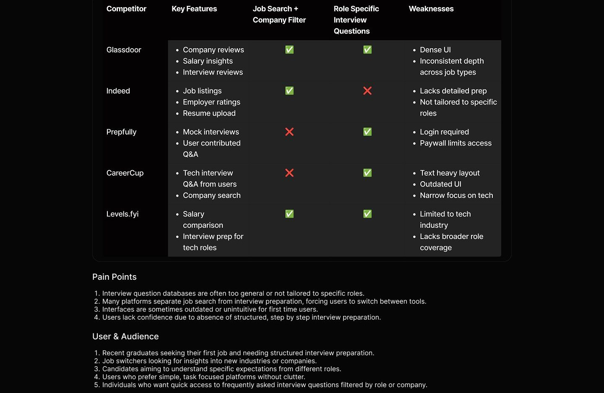
Ideation
After understanding user needs and competitor gaps, the ideation stage focuses on designing the overall user flow and experience. Here, 1 put together user flows and user journeys to make sure users can reach their goals smoothly, efficiently, and intuitively.
User Flow
User flows help map the steps users take when using the product, from the initial page to reaching a specific goal. With these flows, I ensure that every interaction is logical and minimizes obstacles.
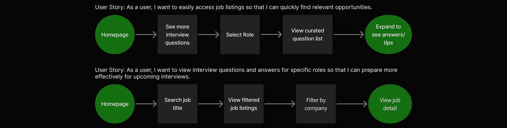
User Journey
‹tual way. By mapping each step, I User journey maps are used to unders can identify opportunities for improve pective.
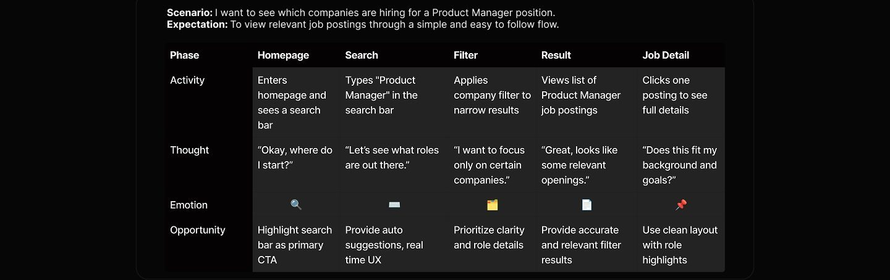
Design system
To maintain visual consistency and efficiency in the design process, I created a design system that includes key UI components such as buttons, cards, color systems, and typography. This design system is designed to be easy to reuse and support responsive interface development, especially for mobile and desktop needs.
Design System
Neutral colors
Neutral 700 Neutral 600 Neutra #1B1818 #303133 #3333
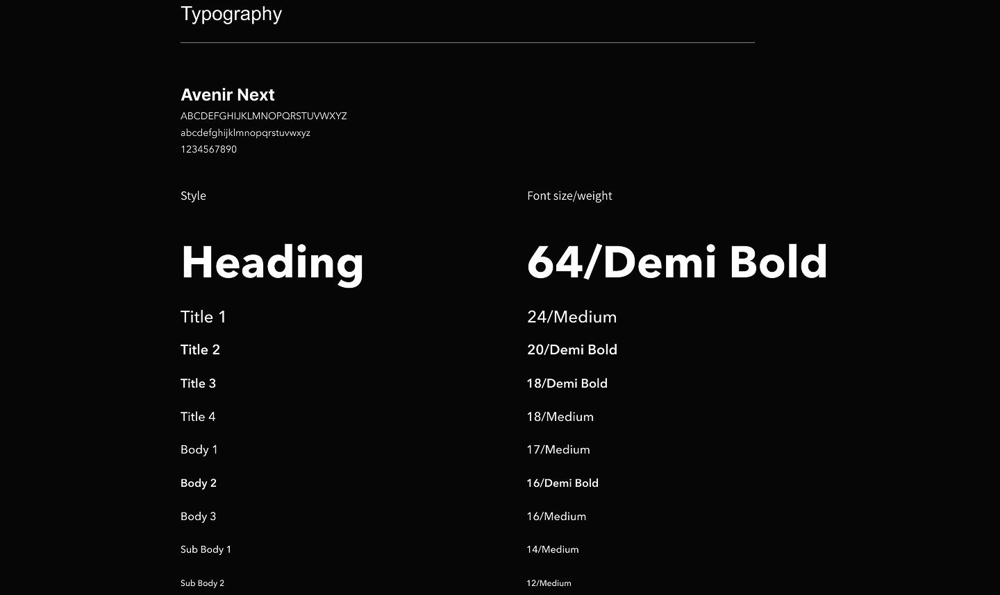
Grid System
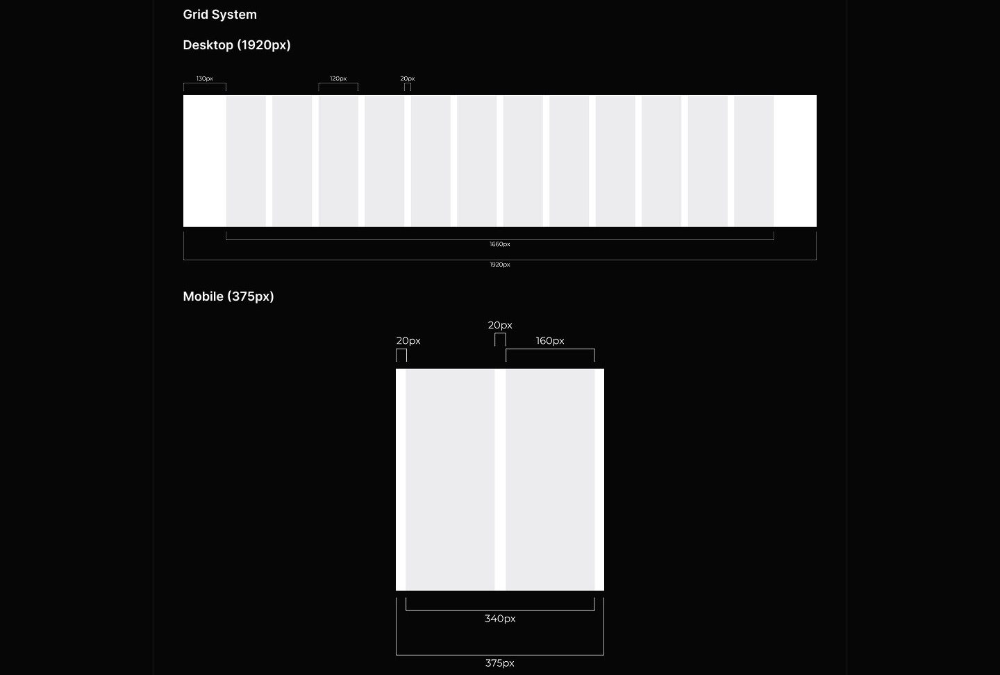
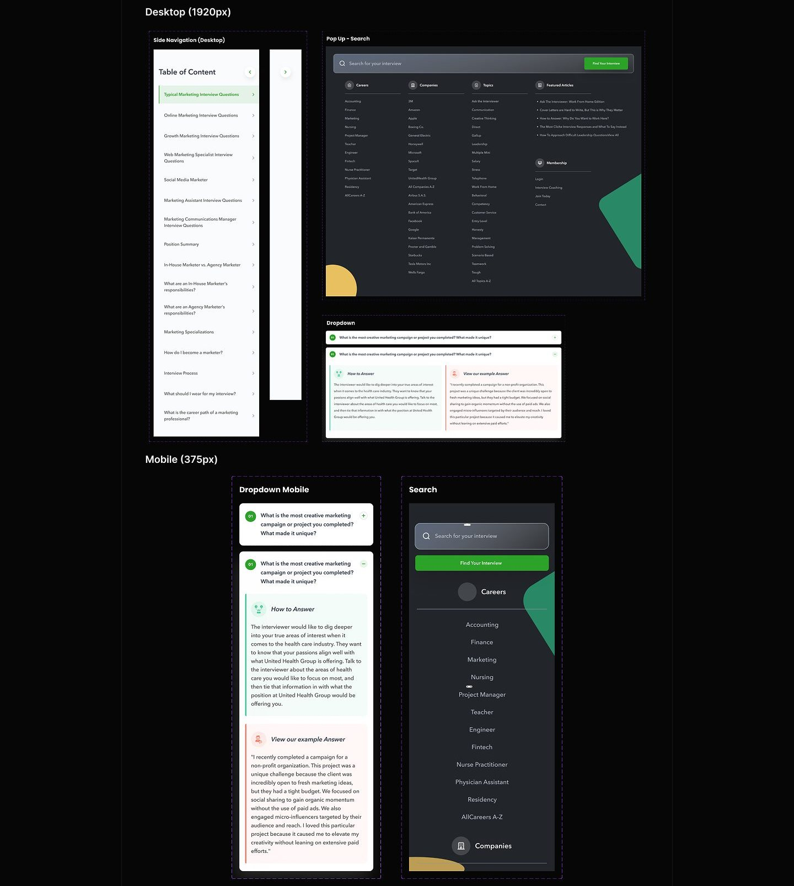
Final design
Homepage
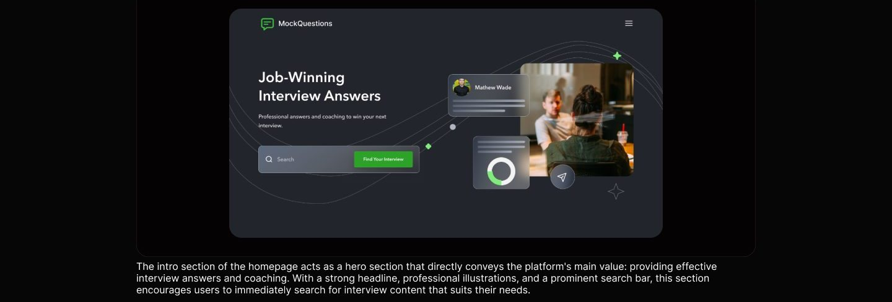
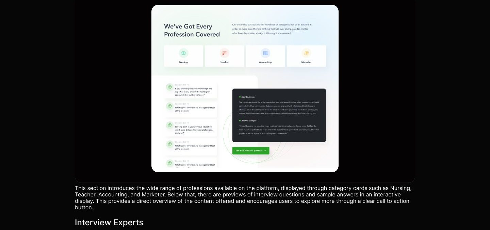
Trust Our Interview Experts
Get interview advice from hiring managers directly.
Justin Vaccaro Justin Vaccaro Justin Vaccaro Justin Vaccaro
Catar fauntun noisema and salinis nai samn
This section features a list of experts who contributed to the compilation of interview answers. Displayed in the form of profile cards complete with names and job titles, this section builds trust by showing that the content comes from experienced professionals who understand the recruitment process firsthand.
Our Directory
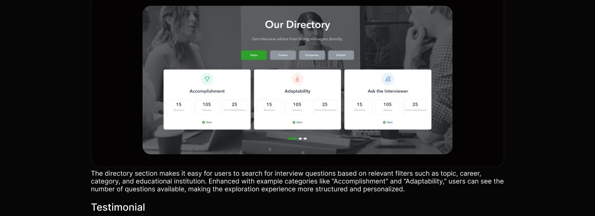
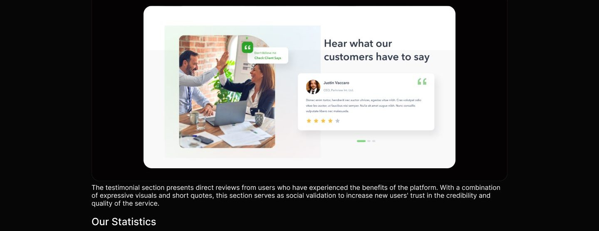
Our Statistics 350 200 HAPPY CLIENTS Donec enim tortor, hendrerit nec auctor ultrices, egestas vitae nibh. Cras volutpat odio vitae leo auctor, ut faucibus nisi semper. Nulla sit amet augue nibh. Nunc convallis vulputate
1000 40 AWARDS RECENED LINES OF CODE
The statistics section shows the platform's achievements quantitatively, such as the number of projects completed, the number of satisfied clients, and the number of answers provided. This information is presented visually to reinforce the platform's professional and trustworthy image.
Footer
MockQuestions
All interview questions are created by MockQuestions com and are not ofticial interview questions for any organization listed on MockQuestions.com.
Contact About Privacy Policy Terms of Use Sitemap
© 2008 - 2021 Mock Questions LLC
The footer provides additional navigation information such as About, Privacy Policy, and Sitemap. This section neatly concludes the page while offering quick access to important information regarding the platform's structure, legal aspects, and usage policies.
Pop up Search Bar
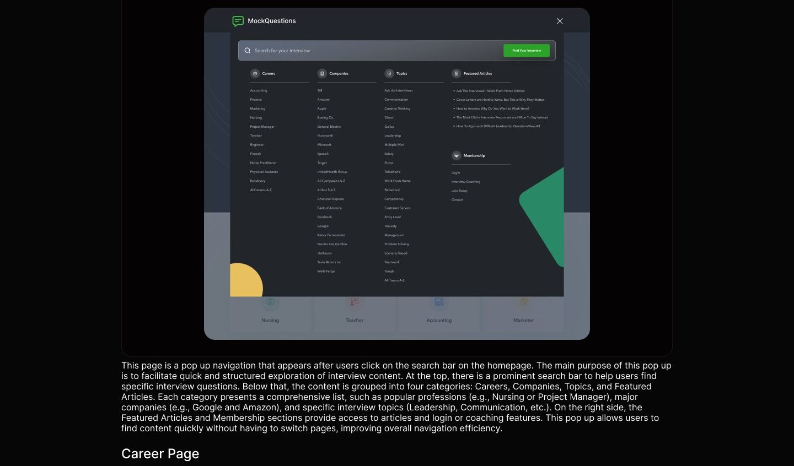
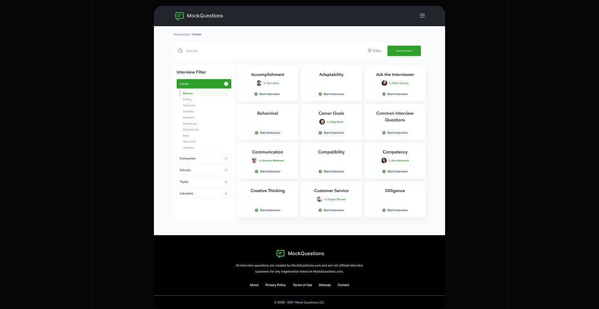
This page is the result of navigation after the user clicks on the Career category from the search pop up. The main focus of this display is to present various types of interview questions based on topics in the selected career context. On the left side, there is an Interview Filter panel that allows users to narrow down results based on additional categories such as Companies, Schools, Topics, and Industries. In the main section of the page, each card displays question topics such as Accomplishment, Adaptability, and Customer Service, complete with the contributor's name and a "Start Interview" button to immediately begin the question and answer session. This page provides a structured, flexible, and easy to navigate content exploration experience tailored to the user's needs.
Filter by Company
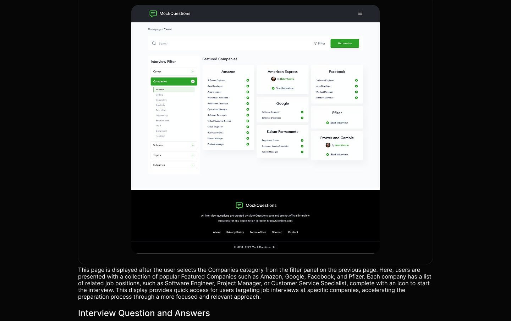
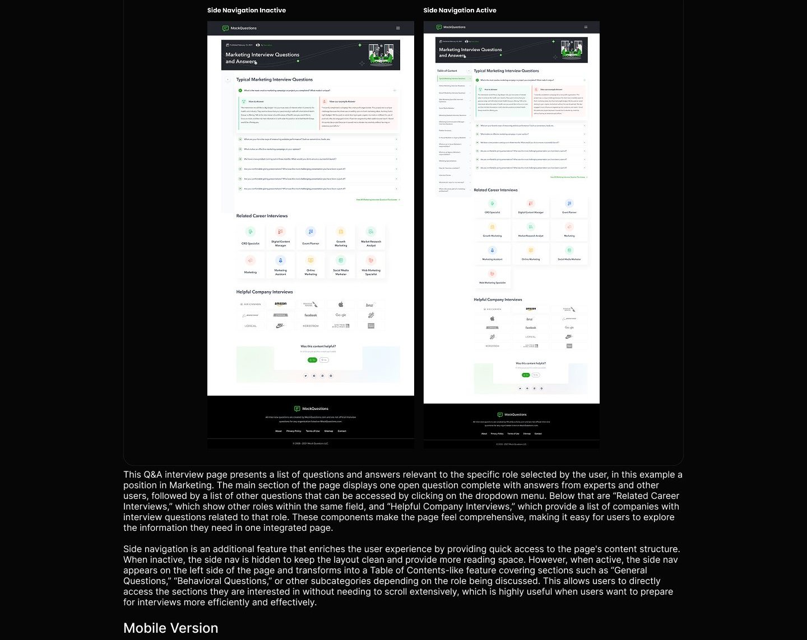
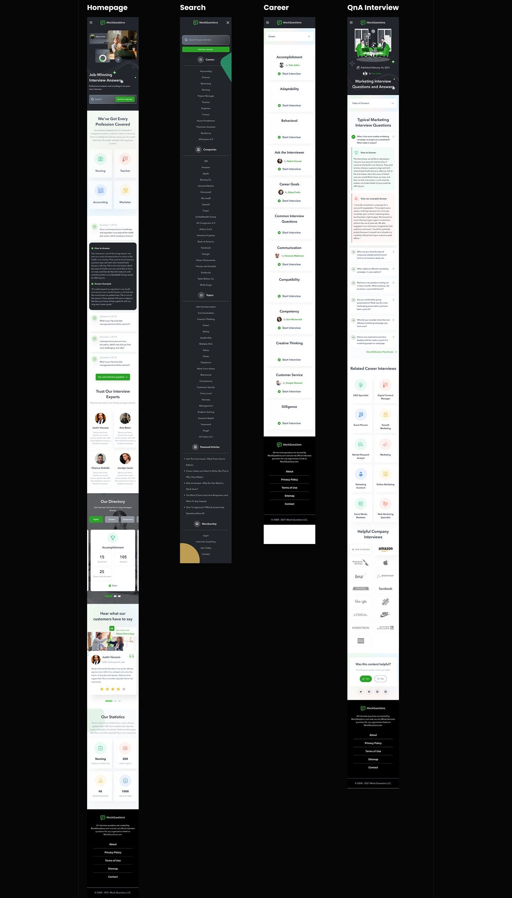
Homepage The homepage welcomes users with a hero visual featuring illustrations and powerful headlines about interview answers that have proven successful. Below that is an introductory section explaining that MockQuestions covers a wide range of professions, complete with illustrations of popular roles such as Nursing, Teacher, Accounting, and Marketer. The next section features sample interview questions and answers to give users an idea of the quality of the content. Testimonials from experts and users are displayed in card format, adding credibility. There is also direct access to directories based on Topics, Careers, and Companies for quick navigation. At the bottom, site statistics reinforce trust with numbers on questions, answers, and user counts, ending with a footer containing additional navigation and copyright information. Pop up Search The search menu opens as an overlay that fills the screen, focusing the user's attention on searching for a role or company. At the top, there is a search bar to search directly for the desired position or company. Below that, the information structure is organized into major categories such as Careers, Companies, and Topics, with a sorted and scrollable list. This is particularly helpful for users who are unsure of the specific role they are seeking, as they can explore based on category or alphabetical order.
Career Page After selecting a specific career category, such as "Marketing," users are directed to the career category page. This page displays more specific subtopics such as Accomplishments, Adaptability, Behavioral, Career Goals, and Diligence. Each subcategory card displays a title and a "Start Interview" button so that users can immediately access the list of questions related to that topic. This layout makes content exploration feel light and modular, while also helping users develop learning strategies based on different areas of competence.
Interview QnA The Q&A interview page for specific roles displays a hero illustration and brief publication information at the top, followed by the main content consisting of questions and answers. The first question is displayed with both expert and user answers, followed by a list of other questions in a dropdown accordion format. There is also a side navigation in the form of a Table of Contents that can be expanded to quickly navigate between categories. Below the main content, there is a "Related Career Interviews" section showcasing similar roles, and a "Helpful Company Interviews" section listing well-known companies with relevant questions. The page concludes with a feedback section for evaluating the content and a standard footer.
Usability testing
To evaluate the overall usability, effectiveness, and user satisfaction of the job interview preparation platform, I conducted a series of moderated usability testing sessions with participants who represented typical job seekers. Each session was designed around realistic, goal oriented scenarios that reflected common tasks users would perform when preparing for job interviews using the platform. The primary objective of this usability testing was to observe how easily users could navigate the platform's features such as searching for career positions by industry, filtering companies, and accessing categorized interview questions. I also aimed to assess whether the sample answers and expert guidance provided clear, actionable support, and if the overall user interface helped users feel confident and prepared for their job interviews. Participants were given the following scenario to complete: 1. As a job seeker, you want to see what positions are currently available. How do you search for them? 2. You want to know what role you need, like a Marketing. How do you find this information? Y 3. ou have a dream to work at a certain company, like a Amazon. How do you find this information? 4. You also want to learn what questions and answers will be asked during the interview. What can you do? 5. You want to know the interview questions and answers specific to the Marketing position. What do you do? These tasks were designed to evaluate the intuitiveness of the content organization, the effectiveness of filtering options, and the clarity of guidance materials. By analyzing user interactions, feedback, and task completion rates, I gathered critical insights that informed design improvements. The findings ensured that the platform meets job seekers' needs by enhancing accessibility, simplifying information discovery, and boosting user confidence throughout their interview preparation journey.
Reflection
If I had additional time, I would: 1. Continued usability testing with the created scenarios. 2. Conduct an in depth evaluation of visual consistency and responsive design. 3. Iterate if feedback is received during usability testing.